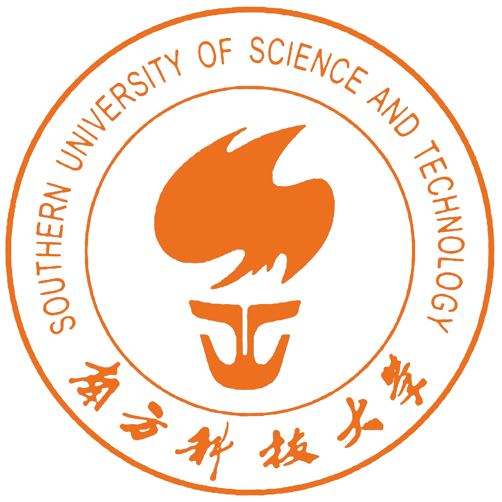

About
I am Wanxing Wu (吴宛幸) (CV), an M.S. student in Computer Science at Institut Polytechnique de Paris (IP Paris). I received my B.S. in Data Science and Big Data Technology from the

Southern University of Science and Technology (SUSTech).My research focuses on efficient LLM and agentic systems. I am a Research Assistant at SUSTech-NLP, working on cost-efficient LLM–SLM routing with an emphasis on faithfulness, generalization, and robustness.
- LLM–SLM Collaboration: RouterXBench, Dirichlet-based probing, distribution-aware layer aggregation
- AI for Genomics: cfDNA-based early cancer detection via ensemble learning
- RL & Agents: Off-policy TRPO, self-reflective Text-to-SQL agents
Education
-
Institut Polytechnique de Paris — M.S. in Computer Science (Sep 2025 – Jul 2027).
-
Southern University of Science and Technology — B.S. in Data Science and Big Data Technology (Sep 2021 – Jul 2025).
Publications
-
Towards Fair and Comprehensive Evaluation of Routers in Collaborative LLM Systems Under Review
Research
-
SUSTech-NLP · Research Assistant — Jan 2025 – Present · Shenzhen, China
- RouterXBench: Designed an evaluation matrix for distribution-shift faithfulness analysis in LLM routing.
- Dynamic Hidden-State Probing: Developed a Dirichlet-based probing method with distribution-aware layer aggregation for routing decisions.
Internship
-
Institute of Intelligent Medical Research (IIMR), BGI · Machine Learning Intern — Jul 2024 – Jan 2025 · Shenzhen, China
- Developed cfDNA-based feature representations via statistical filtering and model-guided selection; applied ensemble learning for early colorectal cancer detection, achieving 94.88% sensitivity.
-
Peking University Shenzhen Hospital · Data Analyst Intern — Jul 2023 – Oct 2023 · Shenzhen, China
- Performed biostatistical analysis on multi-timepoint clinical records to compare postoperative outcomes across surgical methods.
Academic Projects
-
ReflexSQL: Self-Reflective Agent for Text-to-SQL Dec 2025 – Jan 2026
- Designed a self-reflective LLM agent for Text-to-SQL on Spider 2.0-Lite, combining an intra-query reflection-revision loop with a continual memory buffer that accumulates exploration experience across queries.
- Improved executable accuracy from 16.29% (base) to 42.53% on Qwen3-32B; conducted backbone comparison and ablation studies.
-
Conservative Off-Policy Trust Region Policy Optimization Nov 2025 – Jan 2026
- Developed a dimension-wise masking strategy for off-policy TRPO that leverages on-policy gradient alignment to suppress conflicting update components, ensuring update directions remain consistent with the on-policy objective; validated on PyBullet/Gym locomotion tasks.
Honors & Awards
- Outstanding Graduate, Zhiren College, SUSTech (Jul 2025)
- Outstanding Student Scholarship, SUSTech (Oct 2024)
- MCM/ICM Mathematical Contest in Modeling, Honorable Mention (Feb 2024)
Technical Skills
- LLM: inference pipeline (vLLM, SGLang), agentic-RL workflows, SFT/RL training, model evaluation
- Programming & Dev: Python, PyTorch, Docker, Linux, Git, shell scripting
Language Skills
- English: IELTS 6.5, CET-4, CET-6
- Chinese: Native